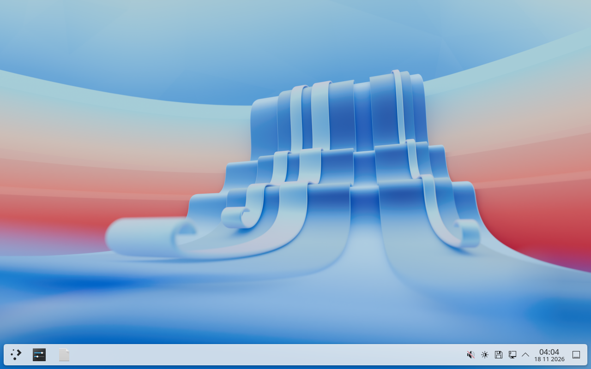
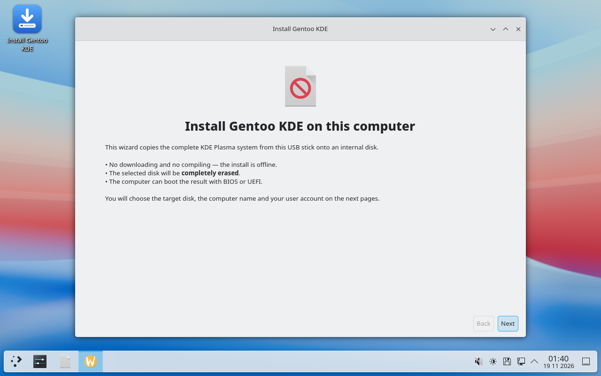
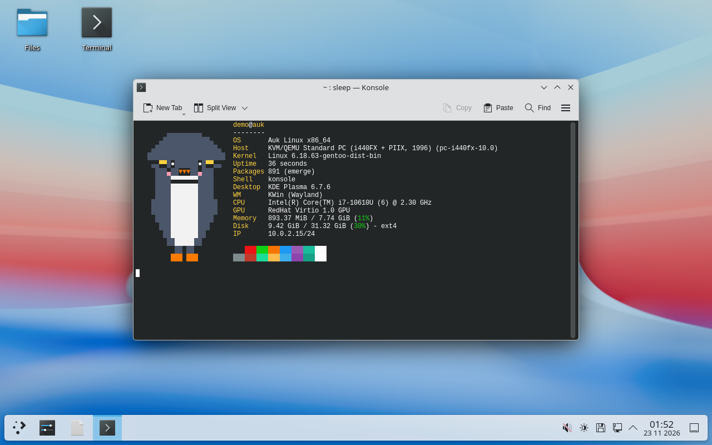
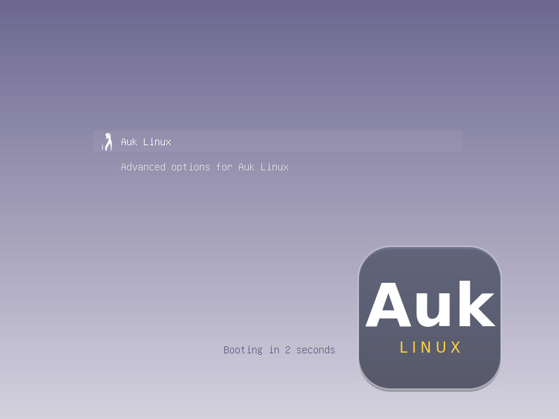

Nothing compiles
Every package comes from Gentoo's official binhost. The installer refuses to fall back to a source build, so a missing binary stops the install instead of starting a 3-hour compile.
Auk is a beginner-friendly KDE Plasma desktop built from prebuilt Gentoo packages. Boot the stick, click through one short installer, and you have a real system on your disk. Nothing is compiled on your machine.

Gentoo is famous for compiling everything. Auk takes the opposite road: it pins the profile the official binary host was built for, then installs only prebuilt packages.
Every package comes from Gentoo's official binhost. The installer refuses to fall back to a source build, so a missing binary stops the install instead of starting a 3-hour compile.
A GTK 4 “Install Auk Linux” wizard picks your disk, asks for a username and copies the running system onto it. No partitioning commands, no fstab editing.
Plasma idles around 700 MB of RAM and 5–10% CPU on a 2-core, 2 GB Chromebook. It is a full desktop, not a stripped rescue shell.
One image carries GRUB for legacy BIOS and the UEFI fallback path. Pick the stick in your firmware boot menu and it starts — no separate ISO per mode.
NetworkManager plus non-free firmware for common Intel, Atheros, Broadcom, Marvell, MediaTek and Realtek cards. Configure Wi-Fi with a text menu or the desktop applet.
The USB is persistent: your files, settings and installed packages survive reboots. Under the hood it is Gentoo with Portage, so nothing is locked away.
The real image, recorded in a virtual machine: boot menu, kernel, desktop, then
auk. No cuts to hide a compile — the kernel log is the only part sped up.
auk.
The kernel log runs at 3×; everything else is real time.
Most of that is the download and the write. Booting takes a couple of minutes.
3.4 GiB compressed, split into two files because GitHub caps release assets at 2 GiB. You need about 20 GB of free disk space.
16 GB or larger. Everything on the stick is erased. Use the
script below, dd, Rufus, or balenaEtcher.
Open your firmware's boot menu and choose the USB device. Disable Secure Boot if
the machine refuses to start it. The live desktop logs in automatically as
demo, and the installer sits on the desktop.
MIT licensed. The image is a 14 GiB persistent disk that boots on BIOS and UEFI and fits a 16 GB stick. Every asset is checksummed; the scripts verify them for you.
Download, verify, join, decompress — one script. It needs curl (or
wget), sha256sum and xz.
curl -fsSLO https://raw.githubusercontent.com/jacoblockard2007-hub/auk-linux/main/bin/download-image.sh
bash download-image.sh
The image lands in ./auk-download/auk-linux-usb.img. Then write it:
# find the stick first — this must be the whole disk, not a partition
lsblk
# replace /dev/sdX with your stick; this erases it
sudo dd if=auk-download/auk-linux-usb.img of=/dev/sdX bs=4M status=progress oflag=syncCheck the device name twice. Writing to your system disk destroys it. Unplug other USB storage to keep the list short.
.part00 and .part01
files from the release, into your Downloads folder..xz).cd $HOME\Downloads
cmd /c copy /b auk-linux-usb.img.xz.part00+auk-linux-usb.img.xz.part01 auk-linux-usb.img.xz
# should print 39BE7EC9703BEBE42C56E76FFCC7931B8DEB9EC228EB3221F7081E15CCFE99DF
(Get-FileHash .\auk-linux-usb.img.xz -Algorithm SHA256).Hashauk-linux-usb.img.xz →
7-Zip → Extract Here. You get
auk-linux-usb.img (~14 GiB)..img, select your USB stick, press Start.
Accept the “DD image” mode if it asks.
Download both parts plus SHA256SUMS into one folder, then join them.
macOS needs xz: brew install xz.
cat auk-linux-usb.img.xz.part00 auk-linux-usb.img.xz.part01 > auk-linux-usb.img.xz
shasum -a 256 auk-linux-usb.img.xz # 39be7ec9…99df
xz -dc auk-linux-usb.img.xz > auk-linux-usb.img
# macOS: use the raw device, for example /dev/rdisk4
sudo dd if=auk-linux-usb.img of=/dev/rdiskN bs=4m
On Linux the write command is the same as in the Linux tab. On macOS,
diskutil list shows which diskN is the stick.
The script checks these automatically. If you downloaded files by hand, compare them before writing anything to a stick — a truncated part is the usual cause of a stick that will not boot.
# auk-linux-usb.img (raw, 15,032,385,536 bytes) dfd8f729db92cfb084791f99d1d15b9bb90beac25f8c512ab9b95d637d04c2a5 # auk-linux-usb.img.xz (joined archive) 39be7ec9703bebe42c56e76ffcc7931b8deb9ec228eb3221f7081e15ccfe99df # auk-linux-usb.img.xz.part00 3234bd9a42748a03f83a17da9b4e014d8dd4484dcaad60091bdbac422e68aa6a # auk-linux-usb.img.xz.part01 3eeebaf6bbd79478747d66ead3f988ec26525f30648c261d3bd31dff6b0f5eb4
The same values are published as SHA256SUMS on the release page.
Every screenshot is from the image you download.


auk prints system info with the Snares penguin
Version 0.1, built and tested in November 2026.
| Base | Gentoo Linux, stage3-amd64-desktop-systemd profile |
|---|---|
| Packages | Gentoo's official binary host — 328 KDE packages installed, 0 compiled |
| Desktop | KDE Plasma 6.7.6 on Wayland |
| Kernel | 6.18.63-gentoo-dist-bin with a generic dracut initramfs |
| Boot | GRUB for legacy BIOS and UEFI; GPT with a BIOS boot partition and an ESP |
| Image | 14 GiB raw, 9.6 GiB used, ext4 root, persistent |
| Installer | GTK 4 wizard, offline whole-disk clone of the running system |
| Included apps | Konsole, PCManFM-Qt, NetworkManager (nmtui), auk system summary |
| Architecture | x86-64 only |
| Live accounts | demo / demo (autologin), root / gentoo |
| License | MIT — third-party components keep their own licenses |
This is a prototype, not a supported distribution. The live passwords are public, the bootloader is unsigned, and the installer only does whole-disk installs — no dual-boot, no encryption. Use a spare machine or a VM, and do not store personal data on it yet.
No. The stick is a complete, persistent system — boot it and work from it. The installer is there for when you want the same system on an internal disk, which is faster and frees the USB port.
Only if you run the installer. Booting the stick touches nothing on your internal disk. The installer itself is whole-disk: it erases the disk you point it at, so do not run it against a disk that holds data you need.
GitHub caps each release asset at 2 GiB and the compressed image is 3.4 GiB, so it is split. The parts are one archive: download both into the same folder, then join them with the downloader script or the commands above.
About 20 GB free on the machine doing the download, a 16 GB-or-larger USB stick, and 2 GB of RAM to run the desktop (4 GB is comfortable). Storage on the stick is 13.5 GB.
Open the firmware boot menu (usually F12, F9 or Esc at power-on) and pick the USB device explicitly — some firmware gives up on a blank internal disk instead of falling through. If it still stops, turn off Secure Boot: the bootloader is unsigned.
The image ships NetworkManager and Debian's non-free firmware for
the common Intel, Atheros, Broadcom, Marvell, MediaTek and Realtek chipsets. On the
live system, run nmtui or use the desktop applet.
Auk is an independent project built from Gentoo binary packages. It is not affiliated with or endorsed by the Gentoo Foundation. The desktop, installer, boot menu and system identity all read Auk Linux.
Not yet. There is no update UI, no rollback, no dual-boot and no encryption. It is a working prototype meant to prove the “zero-compile Gentoo desktop” idea — treat it accordingly.